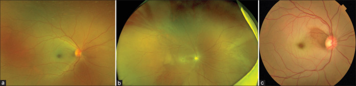
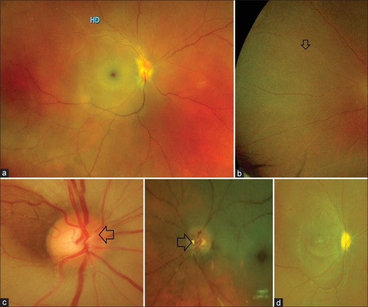
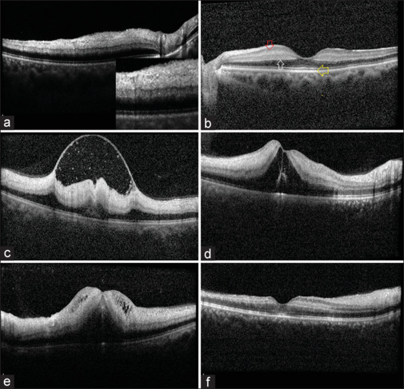
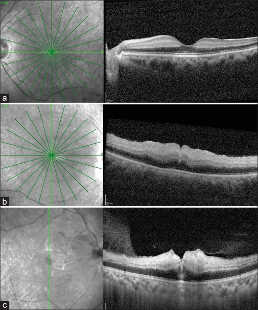
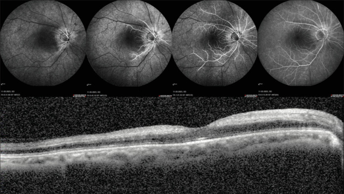

276 — Tắc động mạch trung tâm võng mạc cấp (CRAO): điểm đỏ anh đào và cửa sổ vài GIỜ / Acute central retinal artery occlusion
Tags: pattern:tac-mach-vong-mac pattern:nhoi-mau-vong-mac pattern:phu-vong-mac vung:vong-mac vung:mat vung:dong-mach-canh score:CRAO-OCT-staging protocol:OCT protocol:FFA protocol:SA-Doppler protocol:CTA-co-can-quang protocol:MRI-DWI
Mức chắc chắn (certainty): tổng hợp y văn (literature synthesis) — 1 bài tổng quan cập nhật về CRAO có 6 hình chuẩn (Indian J Ophthalmol 2024;72:945–955, PMC11329807, CC BY-NC-SA 4.0), 1 tổng quan về tiêu sợi huyết tĩnh mạch trong CRAO (Cureus 2023, PMC10348395, CC BY 4.0) và 1 đoàn hệ nguy cơ đột quỵ sau tắc mạch mắt (J Am Heart Assoc 2019, PMC6405587, CC BY-NC-ND 4.0). Không có ca nguyên văn của nhóm — 3 ca trong quiz là ảnh minh họa lấy nguyên văn từ bài gốc, không phải bệnh nhân của nhóm.
Câu chốt: CRAO không phải "mờ mắt do tuổi" mà là nhồi máu võng mạc trong, tức một thể đột quỵ: tế bào võng mạc chết sau ~97 phút thiếu máu, cửa sổ cứu được ước tính 4–6 giờ, và > 80% bệnh nhân vào viện với thị lực đếm ngón tay hoặc kém hơn, < 20% hồi phục thị lực chức năng. Ba số phải thuộc: 1–2 ca/100.000 dân/năm, nguy cơ đột quỵ não gấp tới 10 lần trong 3,5 năm đầu (đỉnh là vài ngày đầu), và 32,3% bệnh nhân CRAO đã có đột quỵ có triệu chứng TRƯỚC khi mắt mờ — nghĩa là mắt là cửa sổ nhìn vào bệnh mạch máu hệ thống, không phải bệnh của riêng mắt.
1. Tổng quan bệnh học – cơ chế hình ảnh
1.1 Vì sao đúng động mạch này lại dễ tắc: giải phẫu + dịch tễ
- Giải phẫu: động mạch trung tâm võng mạc (central retinal artery, CRA) là nhánh đầu tiên của động mạch mắt (ophthalmic artery), chạy một đoạn dài và hẹp trong bao thần kinh thị rồi mới chui vào đĩa thị để chia 4 nhánh. Khác với động mạch mi (ciliary arteries) nuôi hắc mạc, CRA gần như không có vòng nối với các nhánh khác của động mạch mắt — nên tắc là nhồi máu ngay, không có đường vòng.
- Vì sao thuyên tắc hay từ cảnh–tim: mảng xơ ở động mạch cảnh trong cùng bên hoặc ở van tim là nguồn chính; ngoài ra còn thrombus tại chỗ, co thắt trên nền mạch đã hẹp, và ở người trẻ là bệnh tăng đông (yếu tố V Leiden, prothrombin, tăng homocysteine, kháng thể kháng phospholipid), bệnh hồng cầu hình liềm, đa u tủy, SLE, bệnh Behçet; GCA ở người > 50 tuổi là nguyên nhân bắt buộc phải loại trừ.
- Dịch tễ và tiên lượng sống: 1–2 ca/100.000 dân/năm, tuổi trung bình đầu 60, < 2% hai bên, nam nhiều hơn nữ nhẹ. Tuổi thọ trung bình sau CRAO 5,5 năm so với 15,4 năm ở người cùng tuổi không bị — vì chết do tim và đột quỵ, không do mắt.
1.2 Vì sao võng mạc TRẮNG mà điểm vàng lại ĐỎ: vật lý ánh sáng + mô học
- Võng mạc trắng đục (retinal whitening): khi CRA tắc, lớp võng mạc trong (do CRA nuôi) thiếu oxy → phù nội bào tế bào hai cực, tế bào ngang, tế bào amacrine → tế bào căng, mất trong suốt, tán xạ ánh sáng trắng khi soi đáy mắt. Đục lan tỏa cả cực sau, đậm nhất ở vùng dày nhất của võng mạc.
- Điểm đỏ anh đào (cherry-red spot): hõm trung tâm (foveola) KHÔNG có lớp võng mạc trong — vùng này chỉ còn tế bào cảm thụ + biểu mô sắc tố, và được nuôi bởi hắc mạc (động mạch mi) nên vẫn tưới máu bình thường. Khi võng mạc quanh hõm trắng đục, hắc mạc đỏ thẫm lộ ra qua hõm mỏng → thành "điểm đỏ". Vì vậy điểm đỏ anh đào không phải tổn thương, mà là phần võng mạc còn lành duy nhất — nguyên tắc này giải thích luôn vì sao bảo tồn động mạch mi–võng mạc (cilioretinal sparing) lại cứu được thị lực trung tâm.
- Box-carring (phân đoạn cột máu): dòng máu chảy cực chậm, hồng cầu kết chuỗi (rouleaux) ngăn cách bởi huyết tương → cột máu đứt quãng từng đoạn trong động mạch nhỏ.
- Thời gian chịu đựng: võng mạc chịu thiếu máu tới ~97 phút trước khi tế bào chết không hồi phục; sau đó tái tưới máu còn gây tổn thương tái tưới máu (gốc oxy hoạt tính + bạch cầu xâm nhập) — giải thích các hình ảnh bong lớp giới hạn trong, nang trong võng mạc, bong thanh dịch trên OCT muộn.
- Hệ quả điều trị: mọi can thiệp chỉ có nghĩa trong vài giờ. Không có ngưỡng "chờ ổn định" — CRAO là cấp cứu ngang đột quỵ não.
1.3 Vì sao OCT thấy đúng những gì nó thấy (và tại sao OCT sớm hơn đáy mắt)
- Cấp: tăng phản xạ lớp võng mạc trong + che bóng lớp võng mạc ngoài. Tăng phản xạ vì tế bào phù làm chiết suất mô tăng, mặt phân cách quang học bị xóa; che bóng vì lớp trong đục chặn ánh sáng tới lớp ngoài.
- Dấu "mạch rỗng" (empty vessel sign): lòng mạch không còn máu → trên OCT là khoang bầu dục nằm dọc trong lớp võng mạc, thành trên–dưới tăng phản xạ, lòng giảm phản xạ, ít che bóng phía sau. Đây là bằng chứng trực tiếp của tắc, có thể thấy trước khi đáy mắt trắng rõ.
- Màng giới hạn giữa nổi (prominent middle limiting membrane, p-MLM): màng giới hạn giữa nằm ở bờ trong lớp rối ngoài, nơi có synapse tế bào hai cực; phù synapse làm màng này thành một đường tăng phản xạ rõ. p-MLM gặp ở CRAO nhẹ–trung bình và mất đi ở thể nặng (vì lớp trong đã mất cấu trúc) — nên nó là dấu của thiếu máu chưa hoàn toàn.
- Tăng phản xạ biểu mô sắc tố ở hõm: khi lớp trong dày đục và che bóng, biểu mô sắc tố dưới hõm trông sáng hơn vùng xung quanh — đây là tương ứng OCT của điểm đỏ anh đào.
- Mạn: lớp trong mỏng teo nhưng còn phân lớp (khác nhồi máu hoại tử mất phân lớp); lớp ngoài không bị ảnh hưởng vì do hắc mạc nuôi.
1.4 Vì sao FFA và siêu âm Doppler lại là hai câu chuyện khác nhau
- FFA đo THỜI GIAN vận chuyển, không đo "mạch máu": fluorescein đi cùng huyết tương nên thời gian xuất hiện phản ánh tốc độ dòng. Trong CRAO: thời gian mạch–võng mạc kéo dài, đổ đầy chậm từng đoạn, và hiện tượng "không tái thông" (no re-flow) — vùng mao mạch trung tâm hoàng điểm không đầy thuốc dù mạch chính đã thông, do võng mạc phù chèn ép mao mạch.
- Vì sao "CRAO mà vẫn còn tưới máu" là bình thường: đa số mắt CRAO không tắc hoàn toàn — FFA cho thấy dòng chảy chậm + tưới máu tồn dư. Vì vậy "mạch còn đầy thuốc" KHÔNG loại trừ CRAO; cái quyết định là thời gian và vùng không tưới máu.
- Điểm sáng tăng huỳnh quang thì giữa (mid-phase hyperfluorescent spots, MPHS): các chấm sáng nhỏ ở cực sau xuất hiện thì giữa, do kết chuỗi hồng cầu; gặp ở CRAO trung bình–nặng, mất khi tái thông.
- Siêu âm Doppler cảnh (DUS): trả lời câu hỏi "thuyên tắc từ đâu" — hẹp/tắc động mạch cảnh trong cùng bên, mảng xơ loét. Nhưng mức hẹp cảnh KHÔNG dự báo nguy cơ đột quỵ: trong đoàn hệ 83 mắt (31 CRAO, 35 BRAO, 17 OIS), độ hẹp cảnh cùng bên không dự báo được đột quỵ ở nhóm CRAO+BRAO (P = 0,18), trong khi mô hình dự báo đúng 82,4% ca đột quỵ ở nhóm OIS (P = 0,005). Bài học: vẫn phải tầm soát cảnh–tim, nhưng đừng trấn an vì "cảnh chỉ hẹp nhẹ".
1.5 Nguy cơ đột quỵ: con số quyết định việc chuyển tuyến
- Trước khi mắt mờ: 32,3% bệnh nhân CRAO, 11,4% BRAO và 41,2% OIS đã có đột quỵ bán cầu có triệu chứng. Tức gần 1/3 ca CRAO đến viện sau một cơn đột quỵ chưa được chẩn đoán đúng.
- Sau khi mắt mờ: trong 3 năm, thêm 4,8% (CRAO), 12,9% (BRAO), 40% (OIS) bị đột quỵ bán cầu.
- Nguy cơ tương đối: tới 10 lần dân số chung trong 3,5 năm đầu, cao nhất trong vài ngày đầu và có thể kéo dài cả thập kỷ.
- Hệ quả thực hành: CRAO = "đột quỵ mắt" → chuyển đơn vị đột quỵ ngay, không phải hẹn khám mắt 1 tuần.
2. Mẫu hình + chẩn đoán phân biệt theo vị trí (Gamut)
- Mẫu hình chốt: mất thị lực MỘT bên, ĐỘT NGỘT, KHÔNG ĐAU + võng mạc trắng đục lan tỏa cực sau + điểm đỏ anh đào + động mạch nhỏ, box-carring ± RAPD.
- Gamut theo "vùng trắng" (rất thực dụng):
- Trắng TOÀN cực sau + điểm đỏ anh đào: CRAO (không viêm mạch) · CRAO do viêm mạch (GCA) · CRAO + CRVO kết hợp · tắc động mạch mắt (ophthalmic artery occlusion — thị lực kém hơn cả cảm giác sáng, đĩa nhợt, hắc mạc cũng thiếu máu).
- Trắng MỘT VÙNG theo lãnh thổ nhánh: tắc nhánh động mạch võng mạc (BRAO) — mảng Hollenhorst ở chỗ chia nhánh.
- Trắng QUANH hõm nhưng hõm còn hồng + thị lực trung tâm CÒN: CRAO bảo tồn động mạch mi–võng mạc.
- Không trắng, chỉ đốm trắng ngoại vi + xuất huyết: Purtscher/Purtscher-like (chấn thương, viêm tụy cấp, suy thận, DIC, TTP) · PAMM (nhồi máu lớp giữa — xem dưới).
- Trắng đục + xuất huyết nhiều + tĩnh mạch giãn: CRAO + CRVO kết hợp — tỉ lệ tân mạch rất cao, tiên lượng xấu nhất.
- Gamut theo cơ chế (để chọn xét nghiệm):
- Thuyên tắc từ cảnh: mảng xơ, hẹp cảnh trong, carotid web, bóc tách cảnh.
- Thuyên tắc từ tim: rung nhĩ, van tim, viêm nội tâm mạc, u nhầy nhĩ, PFO ở người trẻ.
- Tại chỗ/co thắt: xơ vữa CRA, co thắt mạch, sau phẫu thuật dài tư thế sấp, chèn ép nhãn cầu (hôn mê, mê), thuốc làm đầy mạch máu (filler) vùng gian mày–rãnh mũi má.
- Tăng đông/viêm mạch: yếu tố V Leiden, prothrombin, homocysteine, kháng phospholipid, hồng cầu hình liềm, đa u tủy, SLE, Behçet, GCA.
- Gợi nhớ 3 câu hỏi lọc trước khi gọi CRAO: (1) một bên, đột ngột, không đau? (2) trắng đục có bờ theo vùng hay toàn cực sau? (3) đĩa thị có nhợt trắng phấn kèm đốm bông, hay bệnh nhân > 50 tuổi có đau đầu/đau hàm? — nếu (3) dương tính, đây là GCA, không phải CRAO thường.

(a) CRAO không do viêm mạch — võng mạc trắng đục + điểm đỏ anh đào, đĩa thị không phù. (b) CRAO do viêm mạch (GCA) — thêm phù/nhợt đĩa thị vì kèm thiếu máu thần kinh thị trước. (c) CRAO bảo tồn động mạch mi–võng mạc — một "đảo" võng mạc còn hồng ở bờ thái dương hõm, thị lực trung tâm giữ được. Nguồn: Venkatesh R et al., Indian J Ophthalmol 2024;72:945–955, PMC11329807, CC BY-NC-SA 4.0 (nguyên bản, không crop).
(a) Võng mạc trắng đục + điểm đỏ anh đào. (b) Box-carring — cột máu đứt đoạn (mũi tên). (c) Thuyên tắc trong lòng động mạch (mũi tên). (d) Thể mạn: đĩa thị nhợt, động mạch teo nhỏ, biến đổi hoàng điểm. Nguồn: PMC11329807, CC BY-NC-SA 4.0 (nguyên bản).3. Bảng so sánh phân biệt (ma trận đối chiếu)
| Thực thể (entity) | Hình ảnh điển hình | Chốt vào (rule-in) | Chốt loại (rule-out) | Gợi ý xác nhận |
|---|---|---|---|---|
| CRAO không do viêm mạch | Trắng đục toàn cực sau + điểm đỏ anh đào + box-carring; đĩa thị KHÔNG phù; thuyên tắc thấy được 20% | Mù một bên đột ngột không đau + trắng đục quanh hõm + OCT tăng phản xạ lớp trong | Đĩa nhợt trắng phấn + đốm bông + > 50 tuổi có đau hàm → CRAO do GCA | OCT (dấu mạch rỗng), FFA chậm đổ đầy, DUS cảnh + siêu âm tim |
| CRAO do viêm mạch (GCA) | CRAO + phù/nhợt đĩa thị (AAION kèm), đốm bông, có thể hai bên; FA chậm đổ đầy hắc mạc 45–60 giây | > 50 tuổi + đau đầu mới/đau hàm + ESR/CRP cao + đĩa nhợt trắng phấn | Trắng đục thuần + đĩa hồng bình thường + không triệu chứng hệ thống → không phải GCA | ESR/CRP cấp cứu, siêu âm halo, sinh thiết thái dương — steroid NGAY, không chờ |
| CRAO bảo tồn động mạch mi–võng mạc | Đảo võng mạc hồng ở bờ hõm (lãnh thổ nhánh mi–võng mạc), phần còn lại trắng | Thị lực trung tâm CÒN tốt dù võng mạc trắng; FFA thấy vùng tưới máu bảo tồn | Thị lực tốt + không có vùng trắng nào → không phải CRAO | FFA là cách duy nhất vẽ rõ ranh giới vùng bảo tồn |
| BRAO (tắc nhánh) | Trắng một vùng theo lãnh thổ nhánh, thường kèm mảng Hollenhorst vàng óng ở chỗ chia | Khuyết thị trường tương ứng vùng trắng + mảng thuyên tắc thấy được | Trắng toàn cực sau + điểm đỏ anh đào → CRAO | Soi đáy mắt giãn đồng tử, FFA, cùng workup nguồn thuyên tắc |
| Tắc động mạch mắt (ophthalmic artery occlusion) | Trắng đục toàn cực sau + đĩa nhợt + hắc mạc cũng thiếu máu (không còn "điểm đỏ" rõ) | Thị lực KÉM HƠN cả cảm giác sáng + đĩa nhợt + mạch hắc mạc chậm | Còn cảm giác sáng + điểm đỏ anh đào rõ → CRAO | FFA (hắc mạc không đổ đầy), DUS cảnh, CTA |
| CRAO + CRVO kết hợp | Trắng đục + xuất huyết nhiều + tĩnh mạch giãn ngoằn ngoèo | Đồng thời dấu tắc động mạch và tắc tĩnh mạch | Chỉ trắng, không xuất huyết → CRAO đơn thuần | FFA + OCT; theo dõi tân mạch sát vì tỉ lệ rất cao |
| OIS (thiếu máu mắt mạn) | Xuất huyết điểm giữa ngoại vi, động mạch hẹp–tĩnh mạch giãn, tân mạch mống mắt/góc, đau hốc mắt | Mất thị lực từ từ + đau + tân mạch góc + FA chậm đổ đầy hắc mạc từng mảng | Mù đột ngột + trắng đục + điểm đỏ anh đào → CRAO | Xem bài 274 (OIS) |
| PAMM / Purtscher | Dải tăng phản xạ lớp giữa trên OCT (PAMM) hoặc đốm trắng quanh đĩa + xuất huyết (Purtscher) | PAMM: dải lớp giữa + thị lực thường còn khá; Purtscher: bối cảnh chấn thương/viêm tụy/suy thận | Trắng đục toàn lớp trong + điểm đỏ anh đào → CRAO | OCT (PAMM), hỏi bệnh sử chấn thương/viêm tụy |
- Không tạo ảnh ghép cho bài này: 5 ảnh thuộc nhiều bệnh nhân, nhiều modality (đáy mắt màu, OCT, FFA) và bài gốc là CC BY-NC-SA — ghép sẽ tạo tác phẩm phái sinh phải chia sẻ cùng giấy phép, không cần thiết. Ảnh giữ nguyên bản, đặt riêng.
4. Protocol chụp + hệ phân độ và xử trí
4.1 Phân độ CRAO cấp trên OCT (thang dùng trong thực hành, không có RADS cho mắt)
| Độ | Đục lớp giữa ± lớp trong | Dày lớp võng mạc trong | Mất phân lớp lớp trong | Ý nghĩa |
|---|---|---|---|---|
| Nhẹ | Có | Không | Không | Thiếu máu chưa hoàn toàn; p-MLM còn thấy → khả năng hồi phục cao hơn |
| Trung bình | Có | Có | Không | Phù lan sang lớp trong, còn phân lớp → còn "khung" để hồi phục |
| Nặng | Có | Có | Có | Mất phân lớp = hoại tử; tiên lượng thị lực xấu, PPV + tPA tại chỗ ít hiệu quả |
- Bắt buộc đo: độ dày võng mạc trung tâm (CMT), tìm dấu mạch rỗng, p-MLM, bong lớp giới hạn trong, nang trong võng mạc, bong thanh dịch.
- Cảnh báo OCTA: ở CRAO cấp nặng (tăng phản xạ + mất phân lớp) và CRAO mạn (mỏng nhiều), phần mềm tự động phân lớp SAI → không đọc mật độ mao mạch như số thật.

(a) Dấu mạch rỗng (mũi tên trắng) — lòng mạch không máu. (b) p-MLM (mũi tên đỏ) + tăng phản xạ biểu mô sắc tố ở hõm (mũi tên vàng) — tương ứng OCT của điểm đỏ anh đào. (c) Bong lớp giới hạn trong. (d) Nang trong võng mạc + bong thanh dịch nông. (e) Hoại tử lớp võng mạc trong. (f) Teo mỏng lớp trong ở thể mạn. Nguồn: PMC11329807, CC BY-NC-SA 4.0 (nguyên bản).4.2 Workup hệ thống (làm song song, không chờ — bảng 1 của bài gốc)
- Bắt buộc: ESR + CRP (> 50 tuổi, hoặc bất kỳ ai có đĩa nhợt/đau đầu/đau hàm) · công thức máu + phết máu ngoại vi · đường huyết, lipid, HbA1c · đông máu (PT/aPTT, fibrinogen) · điện tâm đồ · siêu âm tim (TT/TEE) · siêu âm Doppler cảnh · CTA/MRA não–cổ.
- Theo bối cảnh: cấy máu (nghi viêm nội tâm mạc) · homocysteine, yếu tố V Leiden, prothrombin, kháng thể kháng phospholipid, protein C/S (người trẻ, không yếu tố nguy cơ) · điện di protein huyết thanh (đa u tủy) · Hb điện di (hồng cầu hình liềm) · ANA/ANCA, QuantiFERON, X-quang ngực (viêm mạch/lao).
- Đừng quên bệnh sử "cơ học": nằm sấp kéo dài khi mổ, hôn mê đè mắt, tiêm filler vùng gian mày–mũi má, dùng cocaine.
4.3 Xử trí theo cửa sổ thời gian
- Cửa sổ: 4–6 giờ từ lúc bắt đầu mờ (ước tính, chưa được định nghĩa chắc chắn); tế bào chết sau ~97 phút.
- Trong cửa sổ — các biện pháp "cơ học" (bằng chứng yếu, nhưng rẻ và ít hại):
- Xoa nhãn cầu: đặt kính tiếp xúc 3 gương 10 giây gây tắc/ngưng dòng động mạch rồi thả 5 giây, lặp lại — mục tiêu di chuyển thuyên tắc ra ngoại vi.
- Hạ nhãn áp cấp: chọc tiền phòng (anterior chamber paracentesis), acetazolamide TM, chẹn beta tại chỗ, mannitol — giảm nhãn áp → tăng áp lực tưới máu qua CRA.
- Carbogen (95% O₂ + 5% CO₂) hoặc thở lại khí thở ra trong túi giấy (tăng CO₂ gây giãn mạch).
- Bằng chứng phản biện: gộp nhiều biện pháp cho hồi phục thị lực 7,4% so với 17,7% ở diễn tiến tự nhiên (meta-analyses); chọc tiền phòng ± carbogen không có lợi trong 2 phân tích hồi cứu bất kể thời điểm. ⇒ không được coi là điều trị đã chứng minh.
- Tiêu sợi huyết tĩnh mạch (IVT) — bằng chứng mới nhất:
- Liều như đột quỵ: alteplase 0,9 mg/kg (tối đa 90 mg), 10% bolus trong 1 phút, phần còn lại truyền 1 giờ; cửa sổ 4,5 giờ.
- Kết quả: Schrag (9 nghiên cứu, 147 bệnh nhân) — 34 ca được IVT < 4,5 giờ, 17 ca (50%) hồi phục thị lực chức năng; Grory (238 bệnh nhân, gộp) — 67 ca < 4,5 giờ, hồi phục 37,3%; Dumitrascu (111 ca) — không ca nào < 4,5 giờ bị xuất huyết nội sọ có triệu chứng hay xuất huyết mắt.
- Nhưng: Cochrane 2023 (6 RCT, 223 người bệnh) không đưa ra được khuyến cáo mạnh (bằng chứng chắc chắn thấp, thiết kế không đồng nhất); AHA 2021 chỉ nói "có thể hiệu quả"; chỉ 5,8% bệnh nhân CRAO thực tế được IVT; trong 9.511 lượt telestroke chỉ 49 (0,51%) là lý do mắt và không ca nào được IVT.
- Tiêu sợi huyết ĐỘNG MẠCH (IAT): Biousse — 249 bệnh nhân, 87 (34,9%) cải thiện ≥ 4 dòng Snellen; RCT duy nhất (Schumacher) dừng sớm vì 1 ca xuất huyết não + 1 ca xuất huyết tiểu não và không khác biệt có ý nghĩa. Nguy cơ bóc tách động mạch + lợi ích thấp ⇒ không khuyến cáo thường quy.
- Oxy cao áp (HBOT): khởi đầu 2 ATA × 90 phút; nếu không cải thiện sau 30 phút → 2,4 ATA; không cải thiện → 2,8 ATA rồi dừng. Cơ chế: oxy hòa tan trong huyết tương nuôi võng mạc qua hắc mạc trong lúc chờ tái thông tự nhiên.
- Nd:YAG phá thuyên tắc: chỉ áp dụng được khi thấy thuyên tắc, mà chỉ 17% ca có thuyên tắc nhìn thấy ⇒ không phải điều trị thường quy (meta 61 bệnh nhân, có 87% cải thiện một phần, trong đó 14 ca CRAO).
- Cắt dịch kính (PPV) ± tPA tại chỗ: hạ nhãn áp trong mổ để tăng áp lực tưới máu — ví dụ IOP < 3 mmHg trong 3 phút, ngưng tưới 6 phút, nâng huyết áp tới 165/100 mmHg trong 6 phút; PPV + kim 47G bơm 0,4 mL tPA ở 30 psi cải thiện thị lực ở CRAO không hoàn toàn/không toàn bộ (khởi phát trung bình 37,8 giờ, 26–48 giờ) nhưng không cải thiện ở CRAO toàn bộ. Chỉ làm ở nơi có phẫu thuật viên dịch kính–võng mạc kinh nghiệm.
- Nếu là GCA (CRAO do viêm mạch): methylprednisolone TM 500–1.000 mg/ngày × 3 ngày, sau đó prednisone liều cao 3 ngày rồi giảm dần; aspirin 75 mg/ngày (British Society for Rheumatology); tocilizumab là điều trị đầu tay phối hợp cho bệnh nền — không chờ sinh thiết.
flowchart TD
A["Mù MỘT bên, đột ngột, KHÔNG đau"] --> B["Soi đáy mắt giãn đồng tử + OCT + đo RAPD"]
B --> C{"Võng mạc trắng đục + điểm đỏ anh đào?"}
C -->|Không| D["Xét CRVO, BRAO, OIS, PAMM, Purtscher, viêm thị"]
C -->|Có| E{"Đĩa thị nhợt trắng phấn, đốm bông, đau hàm, > 50 tuổi?"}
E -->|Có| F["NGHI GCA: ESR + CRP ngay, methylprednisolone TM 500-1000 mg x 3 ngày, KHÔNG chờ sinh thiết"]
E -->|Không| G["CRAO không do viêm mạch"]
F --> H["Siêu âm halo + sinh thiết động mạch thái dương (sau khi đã dùng steroid)"]
G --> I{"Thời gian từ lúc mờ < 4,5 giờ?"}
I -->|Có| J["Kích hoạt đường đột quỵ: xét IVT alteplase 0,9 mg/kg + xoa nhãn cầu + hạ nhãn áp"]
I -->|Không| K["Xoa nhãn cầu, hạ nhãn áp, carbogen, HBOT 2-2,4-2,8 ATA; cân nhắc PPV"]
J --> L["Workup song song: Doppler cảnh, siêu âm tim, ECG, CTA/MRA não-cổ, đông máu, lipid"]
K --> L
H --> L
L --> M["Theo dõi tân mạch mống mắt/góc trong 4 tháng đầu + kiểm soát yếu tố nguy cơ"]
4.4 Theo dõi sau cấp cứu (phần dễ bị bỏ nhất)
- Tân mạch mống mắt (ONV) sau CRAO: 3,0–18,8%, có thể xuất hiện ngay ngày đầu và tới 2 năm sau; vì vậy soi mống mắt + soi góc mỗi lần khám, đặc biệt trong 4 tháng đầu (khuyến cáo Rudkin). Có tân mạch → PRP ± anti-VEGF, xử trí như glôcôm tân mạch (bài 274).
- Di chứng mạn (đo trên ảnh đáy mắt): teo đĩa thị 91%, động mạch teo nhỏ 58%, tuần hoàn bàng hệ mi–võng mạc 18%, biến đổi biểu mô sắc tố hoàng điểm 11%.
- Thị lực: > 80% vào viện với đếm ngón tay hoặc kém hơn; < 20% hồi phục thị lực chức năng. Đừng hứa hồi phục — hãy hứa tầm soát để cứu não và mắt còn lại.
5. Biến thể bình thường và cạm bẫy
- "Mạch còn đầy thuốc" không loại trừ CRAO: đa số ca không tắc hoàn toàn; FFA thấy dòng chậm + tưới máu tồn dư. Chốt là thời gian vận chuyển và vùng không tưới máu, không phải "mạch có/hết".
- Thị lực còn đọc được vẫn có thể là CRAO: động mạch mi–võng mạc hiện diện ở tới 25–30% mắt (bài gốc: bảo tồn 14% số ca CRAO) → thị lực trung tâm giữ được. Không vì "còn thấy chữ" mà loại CRAO khi võng mạc đã trắng quanh hõm.
- Đáy mắt có thể BÌNH THƯỜNG trong giờ đầu (nhất là CRAO thoáng qua) — OCT nhạy hơn đáy mắt: tìm dấu mạch rỗng và p-MLM trước khi có trắng đục rõ.
- Điểm đỏ anh đào KHÔNG đặc hiệu: còn gặp ở bệnh Tay–Sachs, Niemann–Pick, sialidosis, viêm võng mạc sắc tố, và ở mắt có hắc mạc đậm màu bẩm sinh — nhưng các bệnh này không có võng mạc trắng đục cấp + mù đột ngột. Bối cảnh thời gian là chốt.
- Nhầm CRAO với CRVO: CRVO có xuất huyết lan rộng + tĩnh mạch giãn, CRAO có trắng đục + động mạch nhỏ. Khi có cả hai (CRAO + CRVO) thì tỉ lệ tân mạch rất cao — phải theo dõi góc sát hơn.
- Bỏ sót GCA vì "đã có chẩn đoán CRAO": thêm steroid liều cao không gây hại đáng kể trong vài ngày, còn bỏ sót GCA làm mù mắt thứ hai trong vòng 1 tuần. Ở mọi bệnh nhân > 50 tuổi, ESR/CRP + câu hỏi đau hàm/đau đầu là bắt buộc.
- Cạm bẫy "mắt chỉ là chuyện của mắt": 32,3% đã có đột quỵ trước đó và 4,8% sẽ bị trong 3 năm — không chuyển tuyến đột quỵ là bỏ sót chính.
- Cạm bẫy OCTA: phần mềm tự phân lớp sai ở CRAO nặng/mạn → không dùng số mật độ mao mạch tự động để kết luận.
- Cạm bẫy thủ thuật: chọc tiền phòng ở mắt đang dùng kháng đông hoặc mắt có tiền phòng nông có nguy cơ chảy máu/tổn thương thể thủy tinh — cân nhắc, và không dùng prostaglandin/pilocarpine nếu kèm thiếu máu mạn (bài 274).
6. Tự lượng giá — Blind Quiz
Ca 1 — Nam 68 tuổi, đang xem tivi thì mờ mắt phải đột ngột, không đau. Thị lực đếm ngón tay. Nhìn ảnh đáy mắt, mô tả trước khi mở đáp án.
- Câu hỏi: Dấu hiệu chính? Vì sao hõm trung tâm vẫn đỏ? Ba chẩn đoán phân biệt và hai việc phải làm trong 30 phút đầu?
Bấm để hiện đáp án (findings + chẩn đoán)
- Dấu hiệu: võng mạc trắng đục lan tỏa cực sau, điểm đỏ anh đào ở hõm, động mạch nhỏ, box-carring (cột máu đứt đoạn), có thể thấy thuyên tắc trong lòng mạch ở chỗ chia.
- Vì sao hõm còn đỏ: hõm không có lớp võng mạc trong và được hắc mạc (động mạch mi) nuôi → vẫn tưới máu; hắc mạc đỏ lộ qua phần võng mạc mỏng, trong khi võng mạc quanh đó phù đục.
- Chẩn đoán: CRAO không do viêm mạch.
- Ba phân biệt: CRAO do GCA (đĩa nhợt trắng phấn + đau hàm), OIS (mạn, đau, xuất huyết điểm giữa ngoại vi), CRAO + CRVO (xuất huyết nhiều + tĩnh mạch giãn).
- Hai việc trong 30 phút: (1) kích hoạt đường đột quỵ để xét IVT < 4,5 giờ; (2) ESR/CRP + hỏi đau hàm/đau đầu để loại GCA (nếu nghi → methylprednisolone TM ngay).
- Nguồn: Venkatesh R et al., Indian J Ophthalmol 2024;72:945–955, PMC11329807, CC BY-NC-SA 4.0.
Ca 2 — Cùng bệnh cảnh, OCT hoàng điểm ở 3 mức độ. Nhìn 3 panel, xếp độ nặng và nói panel nào tiên lượng xấu nhất.

- Câu hỏi: Ba tiêu chí phân độ là gì? Panel nào mất phân lớp lớp trong? Vì sao mất phân lớp lại quan trọng?
Bấm để hiện đáp án
- Ba tiêu chí: (1) đục lớp giữa ± lớp trong, (2) dày lớp võng mạc trong, (3) mất phân lớp lớp trong.
- Xếp độ: (a) nhẹ — đục lớp giữa ± lớp trong, không dày, không mất phân lớp; (b) trung bình — tăng phản xạ lớp trong + dày, còn phân lớp; (c) nặng — tăng phản xạ + dày + mất phân lớp (hoại tử).
- Vì sao quan trọng: mất phân lớp = hoại tử không hồi phục; các can thiệp muộn (PPV + tPA tại chỗ) chỉ cải thiện ở CRAO không hoàn toàn/không toàn bộ, không cải thiện ở CRAO toàn bộ. Đây là lý do OCT phải làm ngay, không chờ.
- Nguồn: PMC11329807, CC BY-NC-SA 4.0.
Ca 3 — Bệnh nhân 72 tuổi, mờ mắt 5 giờ, đã xoa nhãn cầu và chọc tiền phòng ở tuyến trước. FFA thì sớm–muộn + OCT. Nhìn ảnh, trả lời trước.

- Câu hỏi: Hiện tượng gì trên FFA? Nó có nghĩa mạch chưa thông không? Điều đó thay đổi xử trí thế nào?
Bấm để hiện đáp án
- Dấu hiệu: các thì FFA cho thấy vùng mao mạch trung tâm hoàng điểm không đầy fluorescein dù mạch chính đã có dòng — hiện tượng "không tái thông" (no re-flow); OCT kèm theo: lớp võng mạc trong tăng phản xạ và dày.
- Cơ chế: võng mạc phù chèn ép mao mạch trung tâm; không phải huyết khối còn nguyên. Vì vậy "không tái thông" KHÔNG có nghĩa là mạch chưa mở.
- Thay đổi xử trí: không thêm thuốc tiêu sợi huyết vì "mạch chưa thông"; chuyển sang theo dõi tân mạch + phục hồi chức năng + kiểm soát yếu tố nguy cơ, và đánh giá lại thời điểm — can thiệp muộn sau 6 giờ không còn cửa sổ.
- Nguồn: PMC11329807, CC BY-NC-SA 4.0.
Bài liên quan chéo
- 444 – Tắc mạch võng mạc: CRVO/BRVO vs CRAO (ma trận phân biệt tắc tĩnh mạch – động mạch)
- 435 – GCA & AAION vs NAION (CRAO do viêm mạch: steroid ngay, halo sign, sinh thiết thái dương)
- 274 – Thiếu máu mắt (OIS) và glôcôm tân mạch (thể thiếu máu mạn, tân mạch mống mắt, tái thông cảnh)
- 453 – Bệnh võng mạc tăng huyết áp và thiếu máu (nền mạch máu, xuất huyết – đốm bông)
- 211 – Đột quỵ não (cùng nguồn thuyên tắc, cùng đường xử trí cấp cứu)
- 400 – Tổng quan Mắt & thị giác
Ảnh
276_crao_the-loai_PMC11329807.jpg— Fig. 1 (ba thể CRAO).276_crao_day-mat-dien-hinh_PMC11329807.jpg— Fig. 2 (cherry-red, box-carring, thuyên tắc, thể mạn).276_crao_OCT-do-nang_PMC11329807.jpg— Fig. 3 (phân độ OCT nhẹ/trung bình/nặng).276_crao_OCT-dau-hieu_PMC11329807.jpg— Fig. 4 (mạch rỗng, p-MLM, bong lớp giới hạn trong, nang, hoại tử, teo mạn).276_crao_FFA_PMC11329807.jpg— Fig. 5 (không tái thông trên FFA + OCT).- Tất cả: Venkatesh R, Joshi A, Maltsev D, Munk M, Prabhu V, Bavaskar S, Mangla R, Ruamviboonsuk P, Chhablani J. Indian J Ophthalmol 2024;72(7):945–955, PMC11329807, CC BY-NC-SA 4.0 — nguyên bản, không crop, không ghép. Chi tiết trong
images/CREDITS.md.
Không dùng để chẩn đoán độc lập khi chưa có người hướng dẫn.